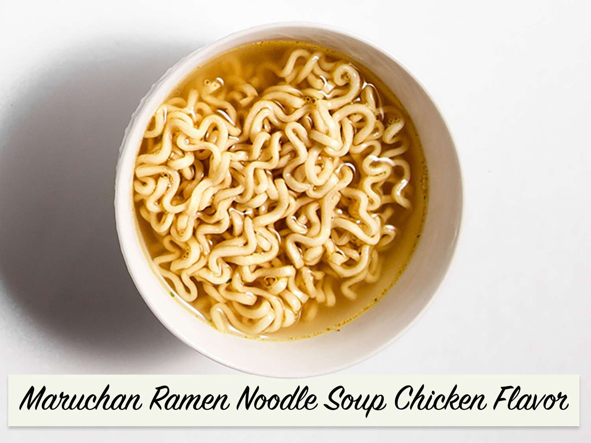

Ramen

Description
Cheap and easy way to make a traditional dish, the taste will absolutley not be the same but it's still an acceptable substitute!
Ingredients
- Ramen packet
- Ramen flavoring packet
- Water
Steps
- Heat Ramen noodles in pot with water
- After specified amount of time, mix in flavoring packet
- Enjoy!